The 5 Best RPGs You Can Play Right Now
From a century-long space saga to a D&D campaign that changes every time, these are the role-playing games worth every hour you put in.
RPGs are the most time-consuming genre in gaming — and the most rewarding when they get it right. We reviewed every major RPG on the site and pulled the five that are genuinely worth the commitment. Each one offers something slightly different, so there's an entry point regardless of your experience level.
Three complete games, one of gaming's most beloved casts, and a galaxy-scale narrative whose decisions you carry across 100+ hours. The remaster brings everything up to modern visual standards. If you've never played Mass Effect, this is the best possible time to start — and if you have, Legendary Edition is the definitive way to replay it.
The redemption arc of the generation. Night City is now one of the most alive, dense, and visually stunning open worlds in gaming. V's story — especially with the Phantom Liberty expansion — is emotionally resonant in ways the launch version never reached. Three years of patches have turned a disaster into a landmark.
The free trial alone — covering the base game and the entire first expansion Heavensward — gives you hundreds of hours of content and one of the most celebrated JRPG stories ever told. The MMO structure means you can engage socially or largely alone. Shadowbringers' storyline is widely considered one of the finest in the genre.
Still the benchmark for open-world RPG narrative design nearly a decade later. The secondary quest writing alone — stories that rival entire standalone games — separates it from everything else in the genre. The Complete Edition includes Hearts of Stone and Blood and Wine, both of which are masterpieces in their own right.
The Game of the Year 2023 by near-unanimous consensus, and arguably the most player-agency-rich RPG ever made. Every build, every moral decision, every companion arc branches into meaningful divergence. Built on D&D 5e rules done right, with a full co-op campaign and companion writing that rivals the best in literary fiction. If you play one RPG from this list, this is the one.
All five of these are worth your time. For first-timers, Witcher 3 or BG3 are the best entry points. For MMO fans, FFXIV offers the richest story in the genre. For something shorter but deeply cinematic, Mass Effect Legendary Edition is a perfect weekend-to-weekend journey.